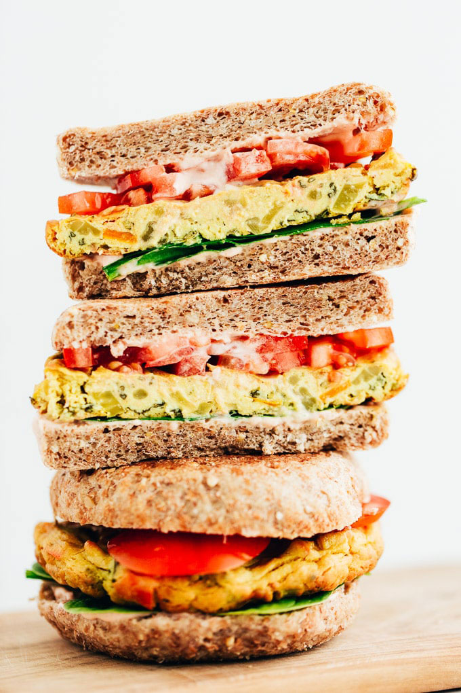

Tofu ‘Egg’ Patty Breakfast Sandwich
Looking for a portable savoury sandwich that you can enjoy on the go? Look no further than this veggie-loaded tofu ‘egg’ vegan breakfast sandwich recipe!
To create your savoury, omelette-like vegan ‘egg’ patties, you’ll need to sauté the veggies as you process the tofu and spices in a food processor. Once your veggies are ready and the tofu mixture is smooth and creamy, combine together before pouring the mixture into a muffin tin. As your tofu ‘egg’ bakes, you have time to prepare the rest of the ingredients to form your epic vegan breakfast sandwich.
Ingredients
( Servings : )| For the Tofu Veggie "Egg" Patties | For the Vegan Breakfast Sandwiches |
|---|---|
| 0.22 Tbsp olive oil | 12.78 g vegan mayonnaise |
| 2.78 g finely diced white or yellow onion | 0.11 Tbsp hot sauce of choice (classic "red hot" sauce and Sriracha both work great) |
| 16.67 g finely diced red, yellow, or orange bell pepper | 1 vegan English muffins or bagels, sliced and toasted (or as many as needed to serve on demand) |
| 7.78 g chopped broccoli florets | Baby spinach |
| 3.33 g baby spinach, chopped | Sliced avocado |
| 0.11 (400g) package Nasoya Extra Firm Tofu , drained | Sliced tomatoes |
| 3.89 g chickpea flour | |
| 1.67 g nutritional yeast flakes | |
| 6.67 ml filtered water | |
| 0.11 Tbsp tahini | |
| 0.11 tsp apple cider vinegar | |
| 0.11 tsp garlic powder | |
| 0.08 tsp sea salt + 1/2 teaspoon black salt (kala namak)* | |
| 0.06 tsp ground turmeric | |
| Freshly ground black pepper |